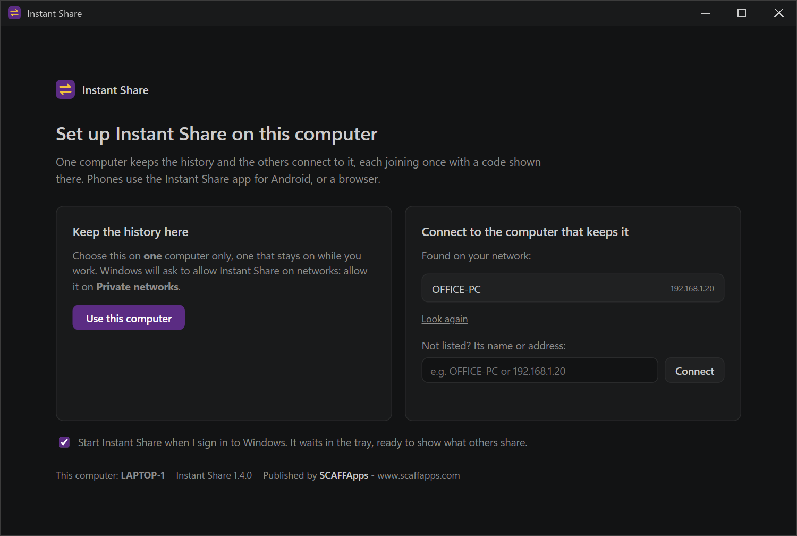
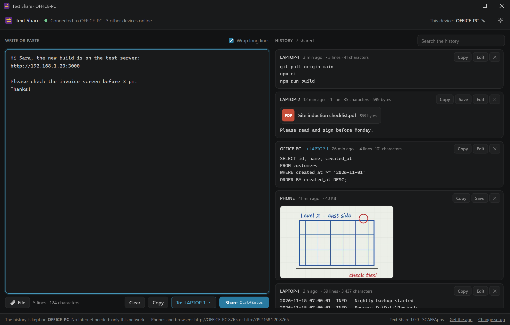
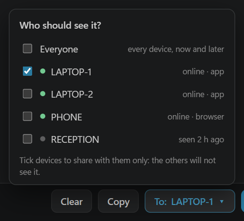
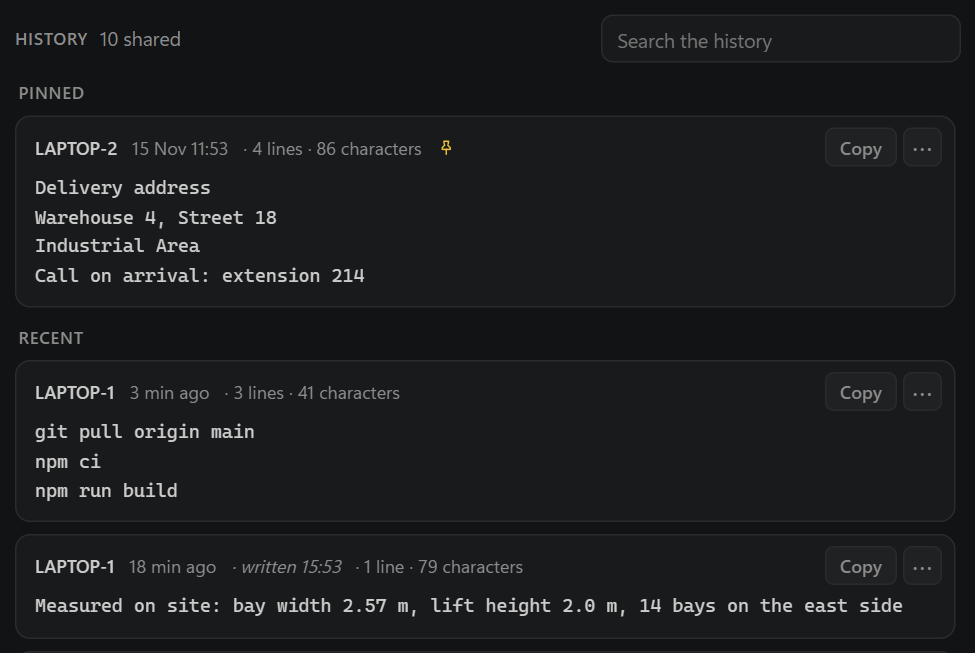
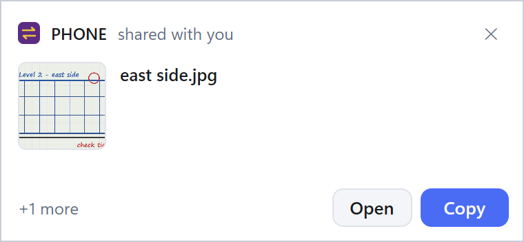
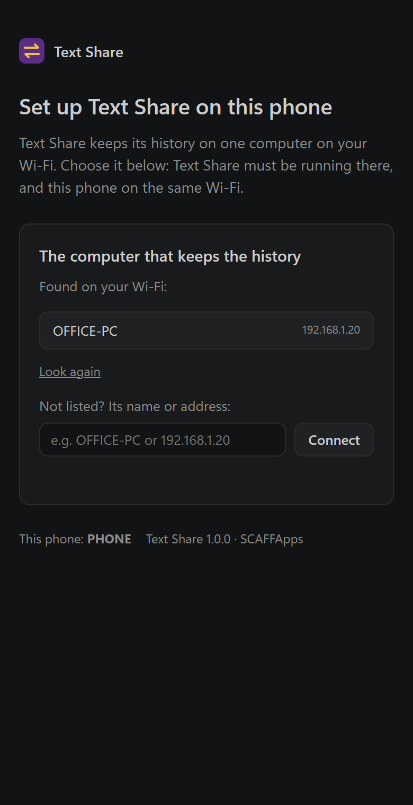

Pass text, photos and PDFs between the computers and Android phones on your own network. Share on one, and the others have it at once, with a pop-up or a notification and a Copy button. Choose who sees it. No internet, no accounts.
Version 1.0.0 · Windows 10 and 11 (64-bit) · Android 10 and newer · Published by SCAFFApps
Contents
1 What Text Share is
2 Installing and setting up
3 The window at a glance
4 Sharing text, photos and PDFs
5 Who should see it
6 The history
7 Pop-ups by the clock
8 The Android app, and browsers
9 The tray icon and keeping it running
10 Options, shortcuts and files
11 Privacy and security
12 Troubleshooting
1. What Text Share is
Text Share passes text, photos and PDFs between the computers on your own network: commands, addresses, links, notes, code, a photo of a drawing, a form to sign. Anything you would otherwise e-mail to yourself, carry on a USB stick or type again.
One computer keeps the history. The other computers run the same app and connect to it, and Android phones run Text Share for Android; they find it on the network by themselves. Anything else (an iPhone, a computer without the app) uses a browser.
LaptopText Share app
Another computerText Share app
Android phoneText Share for Android
iPhone, tabletany browser
→
The computer that keeps the historyText Share app · answers only your own network · no internet needed
Share: write, paste or drop a file and press Share. The other devices have it within a few seconds.
Be told: on every computer with the app, a pop-up by the clock shows who shared what, with a Copy button; on an Android phone, a notification does.
Choose who sees it: everyone, or only the devices you tick.
Keep: everything shared stays in a history you can search, until you delete it.
What it is for, and what it is notText Share is for passing things between devices you own, on a network you trust: at home or in your own office. It has no password and no encryption, so it is not for public or shared Wi-Fi (see section 11).
2. Installing and setting up
File
What it is
Text-Share-1.0.0-portable.exe
The app for Windows 10 and 11 (64-bit), in one file. Nothing is installed and no administrator permission is needed: copy it anywhere, including a USB stick, and double-click it. Use the same file on every computer.
Text-Share-1.0.0.apk
Text Share for Android 10 and newer (section 8). Phones on the same Wi-Fi can also get it straight from the computer that keeps the history.
textshare.py
Text Share as a plain server, for Mac and Linux: python3 textshare.py keeps the history there, and every device uses a browser.
Text-Share-Handbook-1.0.0.pdf
This handbook.
"Windows protected your PC"The app is not code-signed, so Windows may show this message the first time you run it. Choose More info, then Run anyway.
The first start: one question

The first start on a laptop. Text Share has already found OFFICE-PC, the computer that keeps the history.
On one computer, one that stays on while you work, choose Use this computer. It keeps the history. Windows asks whether to allow Text Share on networks: allow it on Private networks, so the others can reach it.
On every other computer, choose that computer in the list under Connect to the computer that keeps it. If it is not listed, type its name or its address, for example 192.168.1.20, and press Connect.
Leave Start Text Share when I sign in to Windows ticked, so it is always ready to show what others share.
The setup can be changed later: Change setup at the bottom of the window, or in the tray icon's menu.
3. The window at a glance

The dark appearance (the default): the editor on the left, the history on the right.
Part
What it does
Dot and status
Green: connected to the computer that keeps the history, with the number of other devices online. Red: it cannot be reached (section 12).
This device
The name shown next to everything this device shares, and in the other devices' lists. Click it to change it.
Sun or moon
Switches between the dark and the light appearance. The choice is remembered.
Write or paste
The editor. What you type stays until you share it, even if you close the window.
File
Adds a photo or a PDF (section 4).
To
Who should see it: everyone, or the devices you tick (section 5).
Share
Shares what is in the editor, and the file, if any.
History
Everything shared with this device, newest first, with a search box (section 6).
Bottom line
Which computer keeps the history, the address for phones and browsers, the version, Get the app (downloads the program) and Change setup.
The same window in the light appearance.
4. Sharing text, photos and PDFs
Text
Write or paste in the editor.
Press Ctrl+Enter, or the blue Share button.
The editor empties, and the text is at the top of the history on every device that may see it.
A photo or a PDF
A photo added, with a line about it, ready to share with LAPTOP-1 only.
Add one file to a share in any of three ways:
press File and choose it;
drag it from File Explorer onto the editor;
paste a picture (a screenshot, for example) into the editor with Ctrl+V.
It shows under the editor; ✕ takes it off again. Text in the editor goes with it, as a caption. A file can also be shared on its own.
What can be shared
Up to
Photos: PNG, JPEG, GIF and WebP
1 MB each
PDF files
1 MB each
Text
20 MB in one share
Photos from a phone are often bigger than 1 MBShare a smaller copy: most phones can send or save a photo at a smaller size, and a screenshot of it is usually well under 1 MB.
Text Share checks what a file really is from its contents, not its name, and refuses anything else. A renamed program or web page cannot be passed off as a photo.
5. Who should see it

The devices Text Share knows, with who is online now.
The To button next to Share says who will see what you share. Click it to choose:
Everyone: every device, now and later. This is the default.
Only some devices: tick them. The others will not see it, in the history or as a pop-up.
The list shows every device that has used Text Share in the last 30 days. A green dot means it is online now: the app is running there (in its window or in the tray), or a browser has the page open. Devices that are offline can be ticked too; they see the item when they come back.
Your choice stays for the next share, and the button shows it, for example To: LAPTOP-1. Tick Everyone to go back.
In the history, an item shared with chosen devices shows them after an arrow, for example → LAPTOP-1, or → you.
Tidy, not lockedSharing with chosen devices keeps it out of the others' history and pop-ups. It is not a lock: someone on your network who knows how could still read it. Section 11 explains.
6. The history

Each item shows who shared it, for whom (if not for everyone), when, and how long it is.
Button
What it does
Copy
Copies the text, ready to paste anywhere. On a photo with no text, Copy copies the photo itself; with text, the button for the photo is Copy photo.
Save
Saves the photo or PDF in your Downloads folder and shows it there.
Edit
Puts the text in the editor so you can change it and share it again. The original stays.
✕
Deletes the item for every device. It turns into Delete?: click again within three seconds to confirm.
Show all
Under items longer than about eight lines. It opens the whole item; Show less folds it again.
Photos show as pictures: click one to see it full size, and click again (or press Esc) to close it. PDFs show their name: click it to open the PDF.
Search the history finds items by their text, their file name, or the device that shared them.
New items glow briefly when they arrive.
Arabic and other right-to-left text reads right to left, line by line.
The history shows the newest 300 items; search reaches all of them.
7. Pop-ups by the clock
Text shared by LAPTOP-1 (dark appearance).

A photo shared with you, and one more item (light).
When another device shares something with this computer, a small pop-up appears above the clock, with a sound, even when the Text Share window is closed. It does not take the keyboard away from what you are doing.
In the pop-up
What it does
Copy
Text: copies all of it, however long. Photo: copies the photo, ready to paste into a document, a chat or an e-mail.
Save
Shown for a PDF: saves it in Downloads and shows it there.
Open
Opens the Text Share window. Clicking the preview does the same.
✕
Closes the pop-up. It also goes by itself after about ten seconds, but not while the mouse is over it.
"shared with you" means it was shared with chosen devices, this one among them. "+2 more" means more arrived at the same time: they are in the history. No pop-up appears while the Text Share window is in front: the history shows new items itself.
8. The Android app, and browsers

The first start: OFFICE-PC found on the Wi-Fi.The same history as on the computers.
Installing it
On the phone, on the same Wi-Fi, open the address shown at the bottom of the Text Share window on a computer (for example http://OFFICE-PC:8765) in the browser, and tap Get the Android app at the bottom. Or copy Text-Share-1.0.0.apk to the phone.
Open the downloaded file. Android asks to allow installing apps from that source the first time: allow it, then Install.
Open Text Share and tap the computer that keeps the history. Allow notifications, and allow Text Share to run in the background (Android asks both, once): that is what lets shares arrive at once.
Using it
Everything works as on a computer: write, add a photo or a PDF (File), choose who sees it (To), Share.
From any other app: tap Share there (on a link, a text, a photo, a PDF) and choose Text Share. It lands in the editor, ready to share.
Notifications: when someone shares something with the phone, a notification shows who, a preview (the picture, for a photo), and buttons: Copy for text, Copy or Copy photo for a photo, Save (to Downloads) and Open for a PDF. They come with the app closed too.
A small "Connected to OFFICE-PC" notice stays while Text Share listens; Android requires it. Tap it to hide it for good: shares still arrive.
The phone's Back button puts Text Share away; it keeps listening.
iPhones and other browsers
iPhones, tablets and computers without the app open the same address in their browser, and bookmark it (or add it to the home screen). Everything works except notifications: the page shows new items while it is open. Save downloads the file the browser's usual way.
Why there is no iPhone appAn iPhone app may only be woken by Apple's internet service, and Text Share never uses the internet. On an iPhone, keep the page open in the browser to see shares as they come.
9. The tray icon and keeping it running
Once set up, Text Share keeps running in the tray, by the clock, when you close its window: the computer that keeps the history goes on serving the others, and every computer goes on showing pop-ups. The first time, a note says so.
Tray icon
What it does
Click
Opens the Text Share window.
Right-click
The menu: Open Text Share, Start with Windows (ticked when it does), Change setup… and Quit Text Share, which really stops it.
Double-clicking the program while it is running does not start a second copy: it opens the window of the running one.
Keep the computer that keeps the history awake
A computer that is asleep cannot share. On it, open Settings > System > Power & battery > Screen, sleep and hibernate and set sleep to Never when plugged in. The screen may still turn off.
A new version
Quit Text Share from the tray menu.
Start the new file. The history and the settings are kept: they are stored apart from the program.
On the computer that keeps the history, Windows may ask again to allow it on networks: allow it on Private networks.
If Text Share starts with Windows, the new file takes over that job by itself the first time it runs.
Backing up or moving the history
The whole history, files included, is one file, history.db, in %LOCALAPPDATA%\TextShare on the computer that keeps it (paste that into File Explorer's address bar). To back it up or move it, quit Text Share first, then copy the file. To start afresh, quit Text Share and delete it.
10. Options, shortcuts and files
Keyboard shortcuts
Keys
What they do
Ctrl+Enter or Ctrl+S
Share what is in the editor, and its file.
Ctrl+V in the editor
Pastes text, or adds a copied picture as the file.
Esc
Closes the device list or a full-size photo.
Options
For special cases, add these after the program's name in a command window (open the program's folder, type cmd in its address bar and press Enter):
Option
What it does
--port 9000
On the computer that keeps the history: use another port than 8765. (If 8765 is taken, Text Share already picks the next free one by itself.)
--data D:\TextShare
Keeps the history and settings in another folder, for example next to the program on a USB stick.
--hidden
Starts in the tray, without the window. Windows starts it this way at sign-in.
Where things are saved
What
Where
The history, files included
%LOCALAPPDATA%\TextShare\history.db on the computer that keeps it.
Settings (setup, name, appearance)
%LOCALAPPDATA%\TextShare\settings.json on each computer.
A log, for troubleshooting
%LOCALAPPDATA%\TextShare\textshare.log on each computer.
Saved photos and PDFs
Your Downloads folder.
Start with Windows
The usual list of programs that start at sign-in (Settings > Apps > Startup).
11. Privacy and security
What Text Share does
Stays on your network. It answers only devices on its own local network and refuses anything from outside it. It never reaches the internet, and nothing you share leaves your network.
Keeps one copy. The history is stored on the computer that keeps it, and nowhere else.
Can't be read by websites. A website open in someone's browser cannot read or change the history.
Checks files. Only real photos and PDFs, by their contents, up to 1 MB.
What it does not do
No password. Anyone on the same network who opens the address can use Text Share, read what is shared with everyone, add to it and delete from it.
No encryption. Text Share talks plain http. Someone watching your own network could see what is shared.
"Who should see it" is not a lock. Items shared with chosen devices are kept out of the others' view, but someone with technical knowledge on your network could still read them.
No expiry. Items stay until someone deletes them.
Use it only on networks you trustHome, or your own office network, is fine. Do not use it on public Wi-Fi, in a hotel or café, or on a network shared with other companies. If you pass a password or a key through Text Share, delete the item once you have pasted it where it belongs.
12. Troubleshooting
Problem
What to do
Setup finds no computer, or cannot connect
Check that Text Share runs on the computer that keeps the history, and that both are on the same network.
On that computer, set the network to Private: Settings > Network & internet > Wi-Fi or Ethernet > Network profile type.
Type its numbered address instead of its name.
A VPN on either computer can hide your own network. Disconnect it and try again.
Guest Wi-Fi often stops devices from seeing each other. Use the main network.
If Windows never asked to allow Text Share, allow it yourself in an administrator command window on the computer that keeps the history:
The computer that keeps the history is off or asleep, or Text Share was quit there. Start it again. The window reconnects by itself, and what you typed stays in the editor.
No pop-ups
Text Share must be running on this computer, in its window or in the tray. Check the tray (click the ^ by the clock). Windows' Do not disturb does not stop them; full-screen games and presentations may cover them.
No notifications on the phone
Check that notifications are allowed for Text Share (the phone's Settings > Apps > Text Share > Notifications), and that its battery use is Unrestricted (same place > Battery). Some phones also stop apps they think are unused: open Text Share once after restarting the phone. The phone must be on the same Wi-Fi as the computer that keeps the history.
The phone can't install the app
Allow installing unknown apps for the browser or Files app you opened it with, when Android asks. The app needs Android 10 or newer.
A device is missing from "Who should see it"
It appears once Text Share has run on it (or a browser has opened the page) while connected to the same computer. A device unused for 30 days leaves the list.
"That file is … Photos and PDFs can be up to 1 MB"
Share a smaller copy (section 4).
The program does not start, or disappears
Choose More info then Run anyway on the SmartScreen message. If your antivirus moved the file away, restore it and mark it as allowed.
"Open Text Share by the server's IP address or computer name"
A browser opened the page through a name Text Share does not trust. Use the address shown at the bottom of the Text Share window.
Something else
The log, %LOCALAPPDATA%\TextShare\textshare.log, says what Text Share did. Send it along when asking for help.
The top of the window when the computer that keeps the history cannot be reached.